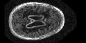
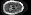

RM estructural · T1
Anatomía
Muestra la forma del cerebro: la atrofia se ve como tejido que se encoge y espacios de líquido que crecen.
sin radiación
GenoBit · Avances del proyecto
CNNs interpretables para Alzheimer
En 15 minutos
01 · Contexto
Una enfermedad neurodegenerativa progresiva y sin cura. Tratarla temprano puede frenar su avance.
Jack et al. (2018) · Nibila y Sivagami (2026)
01 · Contexto
Las etiquetas que usan los estudios
Esquema · Braak y Braak (1991) · Jack et al. (2018)
02 · Neuroimágenes
RM estructural · T1
Muestra la forma del cerebro: la atrofia se ve como tejido que se encoge y espacios de líquido que crecen.
sin radiación
PET
Un trazador radiactivo marca el metabolismo (FDG), las placas de amiloide o los ovillos de tau.
trazador radiactivo
RM funcional
Mide cambios en el flujo de sangre para ver qué regiones se activan con el tiempo (4D).
volumen en el tiempo
Nosotros trabajamos con RM estructural T1: es la más común, barata y sin radiación.
Colores de PET y RM funcional: ilustrativos
02 · Neuroimágenes
02 · Neuroimágenes
SanoMismo nivel del cerebro, distintas personas de OASIS-1: los surcos se ensanchan y los ventrículos crecen.
03 · Estado del arte
Cada punto es un resultado publicado (una tarea de un estudio).
Pero la mayoría no separa por persona, o no lo dice.
En CN vs AD, los que sí separan por persona reportan entre 92 y 94 %.
15 estudios de la matriz del manuscrito + Zhao et al. (2024) y Mahmud Joy et al. (2025)
03 · Estado del arte
Cada persona aporta muchos cortes de su resonancia.
Si se reparten al azar por imagen, la misma persona queda en los dos lados: la red reconoce a la persona, no la enfermedad.
Separando por persona, la prueba es con gente que la red nunca vio. Así lo vamos a hacer.
04 · Nuestra base de datos
Open Access Series of Imaging Studies · pública y transversal
Personas por nivel de demencia (CDR)
Marcus et al. (2007) · tabla clínica de OASIS-1
04 · Avances
…pero solo 347 personas. Contar imágenes engaña.
con demencia moderada. No alcanza para una clase propia.
“sanos” nunca fueron evaluados: son jóvenes de 18 a 57 años.
La edad casi separa las clases sola: hay que cuidar que la red no aprenda edad.
Análisis exploratorio de OASIS-1 (versión en cortes de Kaggle)
05 · Redes convolucionales


Entrada
Filtro 3×3 · bordes verticales

capa 1
capa profundaUn filtro pequeño recorre la imagen y responde donde encuentra su patrón.
Cada filtro busca algo distinto. La red aprende los filtros sola.
Capa tras capa, de bordes a estructuras, hasta decidir.
06 · Mecanismos de atención
La imagen se parte en parches. Con auto-atención, cada parche mira a todos los demás y decide cuáles le importan.
Los pesos de atención forman un mapa: muestra en qué regiones se basó la decisión.
Pesos y mapa: ilustrativos, todavía no vienen de un modelo entrenado
Nuestra propuesta
Código, manuscrito, póster y esta presentación:
github.com/GenobitNeuroimaging/Neuroimaging